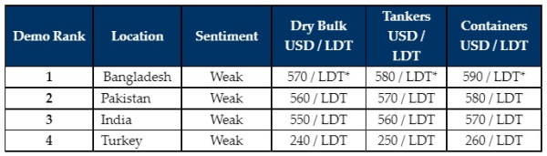

inWeekly Demolition Reports24/10/2022

The world finally gathered this week at the Tradewinds ship recycling conference in Dubai, for the first time in three years due to the onset of the pandemic.
The big topics of the day were discussed, including various green and ESG measures being introduced to secure the sustainable future of recycling of older seafaring assets.
Of course, there has been minimal activity to speak of in terms of sales, as we usually see one or two (market / private) deals being concluded and rates rising during the TW conference, but the event this year seemed to be an occasion for people to catch up, rather than conclude business, especially after the recent years fractured by Covid-19.
Sub-continent markets remain subdued and deprived of tonnage as freight markets continue to fly. Depreciating currencies remain the chief concern (as do fragile steel plate prices), with rates well below USD 600/LDT and likely to move further down.
Turkey too, remains in a depressed state with levels that remain suspended USD 250/MT below its recent spring peak, as its own currency and steel plate prices remain buried, along with the sentiments that too remain diminished.
While the recent buildup seemed to suggest a greater level of activity come Q4 2022, this remains far from reality at this time as there is surprisingly little demand, due to strained banking / L/C limits and disconnected / high asking prices from Owners, leaving most plots in the sub-continent stranded in idle.
The prognosis is therefore not good heading into the final months of the year, and all will be hoping for some increased positivity and ability to buy once the expected increase of tonnage starts to come in from next year.
For week 42 of 2022, GMS demo rankings / pricing for the week are as below.

📄 Download PDF: Ship-recycling-market-insight-week-42-2022-Prognosis-Bleak.pdfSource: GMS,Inc. ,https://www.gmsinc.net/gms_new/index.php/web